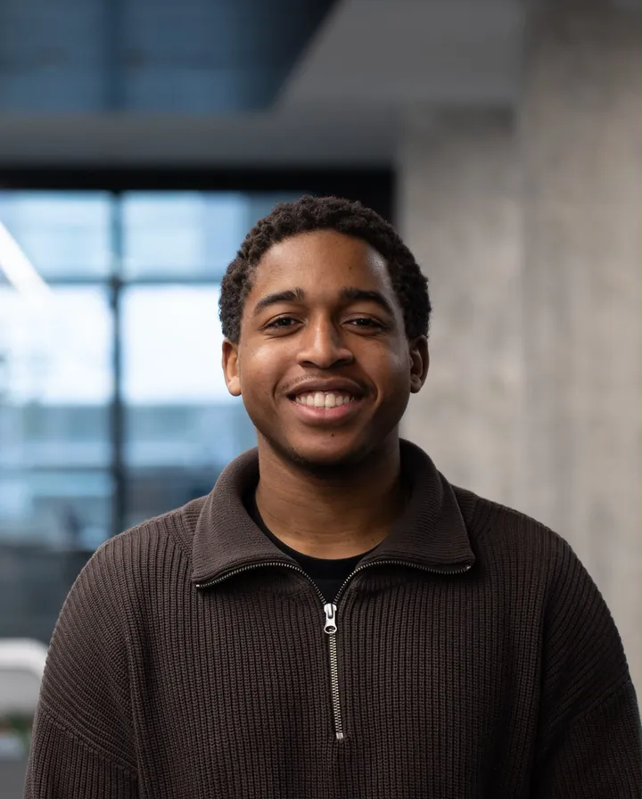
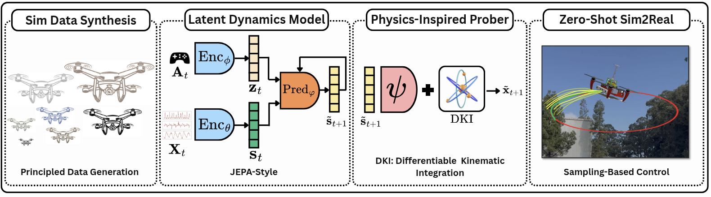

Welches Ergebnis wäre besonders interessant?
Reimplementierung, Demonstrator oder eine andere Form?
Bachelorarbeit
Reimplementierung eines lernbasierten Modells für die Drohnensteuerung.
01

02
Ein Dynamikmodell soll aus dem aktuellen Flugzustand und den Motorbefehlen abschätzen, wie sich die Drohne weiterbewegt.
Bei längeren Vorhersagen werden frühere Schätzungen weiterverwendet. Kleine Fehler können dadurch mit jedem Schritt wachsen.
Das Modell arbeitet mit Zustandsdaten wie Position, Geschwindigkeit und Ausrichtung – nicht mit Kamerabildern.
03

04
Noch offen: Das Paper wird begutachtet; der angekündigte Code für Training, Auswertung und Einsatz ist noch nicht öffentlich.
05
06
07
08
09
Reimplementierung, Demonstrator oder eine andere Form?
Modell, Auswertung und gegebenenfalls Steuerung?
Datensatz, Simulator, Rechenleistung und fachlicher Kontakt?
Zeit, geistiges Eigentum, Vertraulichkeit, Veröffentlichung und Sicherheit?
10
Profil öffnen
yun1us.github.io
Anhang A
Ein Modell, das anhand von Zustandsdaten und Aktionen vorhersagt, wie sich ein System weiterentwickelt.
Das Modell rekonstruiert nicht jedes Detail der Zukunft, sondern sagt eine kompakte interne Beschreibung der zukünftigen Entwicklung voraus.
Die Steuerung prüft viele mögliche Befehlsfolgen, führt den besten nächsten Schritt aus und plant danach erneut.
Das Modell wird in Simulation trainiert und ohne weiteres Training auf der realen Plattform eingesetzt. „Zero-shot“ bedeutet nicht „ohne Training“.
Anhang B
Anhang C
| Aussage | Berichtetes Ergebnis |
|---|---|
| Langzeitvorhersage | Der Fehler wächst laut Paper langsamer als bei direkten Vorhersagemodellen. |
| Physik-Komponente | Die Kombination mit bekannten Bewegungsregeln verringert Positions- und Orientierungsfehler. |
| Echtzeit | Das kompakte Modell wird auf einem NVIDIA Orin NX innerhalb des angegebenen Regelungsbudgets eingesetzt. |
| Reale Flugtests | Die Autoren zeigen Flugbahnen sowie Versuche mit Zusatzgewicht und anderen Propellern. |
| Öffentliche Ressourcen | Paper und Medien sind verfügbar; Code, Modelle und Datenanleitung sind weiterhin angekündigt. |